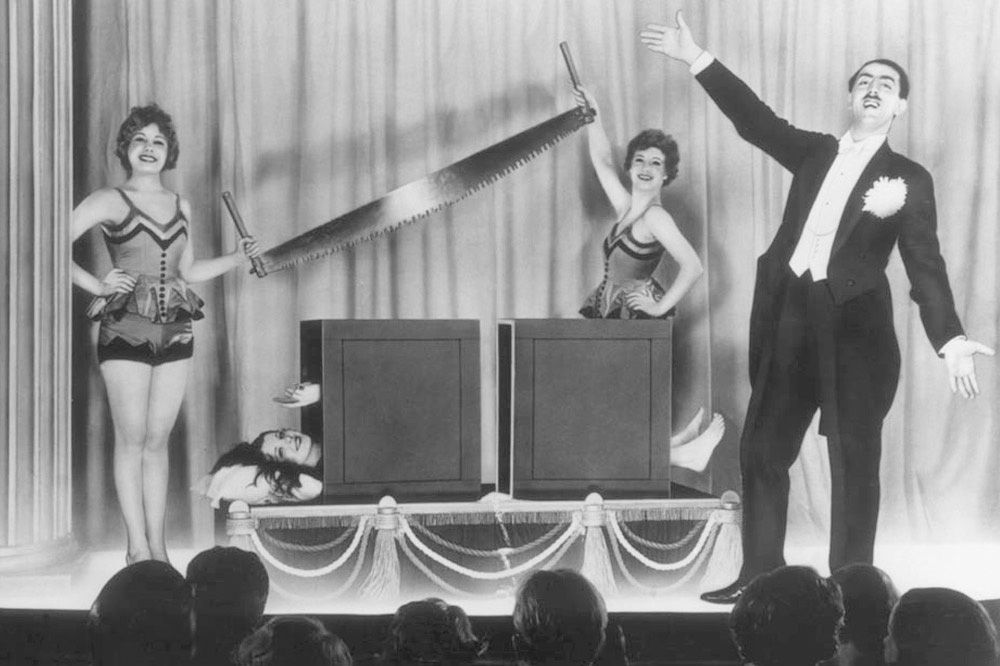
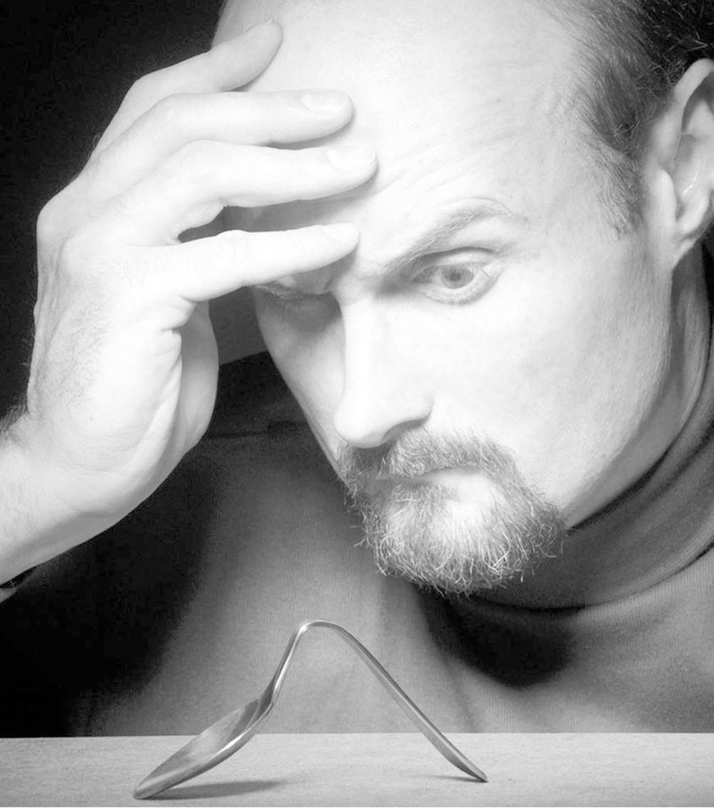

这一章要论证无神论。不过在此之前，我要先阐述一下究竟应该怎样论证一个具体的观点。这一点是必要的，因为除非我们对何为大体上充分的论证有所认识，否则我们就几乎无法评判任何具体观点。
在最一般的情况下，我们可以通过说理、证据和修辞来进行论证。说理有好有坏，类型繁多，我们一会儿会看到。证据有强有弱。这里的修辞比较特殊，因为好的修辞并不意味着更充分的论证，它只是使论证更有说服力。修辞只是用语言进行劝说的方法，它既可以让我们相信谬误，也可以让我们相信真理。
宗教布道者和政治家都是传统的修辞行家。比如，耶稣似乎就说过这样的话“不与我相合的，就是敌我的”（《马太福音》12：30），两千年后乔治·W.布什也用了这种修辞手法，他说“不与我们站在一起的国家，那就是与恐怖主义者一伙”。这完全是修辞手法，因为尽管这么说可能具有说服力，但它没有事实基础或逻辑基础。一个人要么支持布什或耶稣，要么就与他们为敌的说法显然是不正确的。他可以态度未决，或者仍未足够认同，不会全力支持，但已有相当程度的了解，绝不会反对。布什和耶稣期望用这种泾渭分明的说法劝说民众改变中间态度，转向支持自己：“我肯定不反对他们，因此我应该站出来，支持他们。”
在下面的讨论中，我会避免使用纯粹的修辞手法，在无神论受到这种攻击的时候，我会予以揭露。但我主要会集中于无神论的充分论证的真正组成部分：证据和说理。
在平常的谈话中，我们会用到各种各样的证据，如“我是在新闻里听到的”、“我是亲眼看到的”、“在实验中，十只猫中有八只说它们的主人喜欢这样”。
当然，问题是并非所有的证据都是好证据。怎样的证据才算是好证据这本身是个大问题，不过有一个关键的一般原则：如果证据经得起很多人的反复检验，那么这个证据就比较有力；如果证据只由少数人在有限场合中印证，那么这个证据就比较弱。我们可以看两个极端的例子，来了解这个原则。水在零摄氏度结冰的证据就属于最好的证据。原则上，所有人都可以在任何时候对此进行验证，而每次验证又使得这个证据更具有说服力。
我们现在来看另一个极端。有一种证据常被称为轶事证据（anecdotal evidence），因为它来自单个人对一件事的描述。某个人声称他亲眼看到自己的狗自燃。这是不是证明狗会自燃的好证据呢？完全不是，原因有很多。首先，正如苏格兰哲学家大卫·休谟所指出的，这个证据必须与能够说明狗不会自燃的更为众多的证据相权衡。休谟并不是说，这个人的证词不构成证据，而是说，当我们把这个证据与狗不会自燃的其他证据相比较时，这条证据就失去了意义。
这不是一个好证据的第二个原因是，很可悲，人类不善于理解自己的经验，特别是那些不同寻常的经验。以观看魔术表演的经历为例。一位魔术师似乎具有魔力，没有明显借助外力就把一个金属勺子掰弯。你会听到对此深信不疑的人说他们“看到那个人用意念掰弯了勺子”。当然，他们绝没有看见这样的事情，尤其是因为他们看不到魔术师的意念，也就不可能看到用意念掰弯金属勺子的过程。他们看到的只是一个被掰弯的勺子，同时没有看到外力的作用，如此而已。其他的都是一种理解。
以上说明并不是要把所有目击者都称为说谎者或笨蛋。他们既不是说谎者，也不是笨蛋。他们没有说谎，只是误解了；他们不是笨蛋，只是聪明的魔术师的牺牲品。
我们可以通过展示轶事证据的薄弱性，说明这两个极端例子的差别。对狗自燃而言，这个事件无法重现，这是我们把轶事证据作为薄弱证据的一个原因。如果狗的确经常无缘无故地自燃，那么这个证据就是更有力的证据。这是因为，它能够由更多人在各种场合重复检验。
同样，我们也可以对勺子变弯的证据表示怀疑，因为当掰勺子的人在实验条件下接受观察时，他们的“能力”并没有展示出来。这条证据似乎也无法像水结冰那样，接受一般的检验。


图2 把一个人切成两半只需要制造一种错觉即可；然而，掰弯勺子却似乎需要真正的意念力。你相信吗？
我想说的是，所有有力的证据都支持无神论，只有薄弱的证据不支持无神论。对于任何普通情况来说，这都足以证明无神论是正确的。这可以类比水在零摄氏度结冰的例子：所有有力证据都证明这是对的。只有来自轶事、神话、道听途说和魔术表演的证据不支持它。
如果我们错误地把无神论纯粹当成有神论的对立面，那么我们可能会认为支持无神论的证据中应该包括不支持上帝存在的证据。然而，我们在第一章中看到，无神论从本质上说是一种自然主义，所以它的主要证据基础应该是支持自然主义的证据。只在否定的意义上，这种证据才会反证上帝的存在：也就是说，由于缺少证明上帝存在的证据，我们没有任何理由认为上帝存在。
这种论证不能让很多坚守“证据的缺席不是缺席的证据”这条原则的人满意。然而，事情并不像这句话所呈现的那么简单。我们来看一个简单的问题：我的冰箱里有没有黄油。如果我们不打开冰箱门，不往里面看一看，那么关于黄油在不在的证据就缺席了，但这不会构成黄油不存在的证据。如果我们往里看了看，仔细地检视了一番，没有找到黄油，那么证据仍然缺席，但这里证据缺席会构成黄油不存在的证据（缺席的证据）。事实上，除了找不到某物存在 于此的证据之外，很难有什么其他证据可以证明它不在 于此。不存在的东西不会留下踪迹，所以只能是它的存在踪迹的缺席可以为它的不存在提供证据。
我们没有往冰箱里看时证据的缺席，与我们看了时证据的缺席，它们的差异十分简单：前者的缺席是因为我们没有去找可能存在的证据；后者的缺席是因为如果我们要找的东西真的存在，我们应该会找到证据，却没有找到。后面这种证据的缺席是一种真正能够证明缺席的有力证据。想一下：证明你的冰箱里没有大象的最有力的证据是，（比如说）当你打开冰箱门时，你没有发现任何大象的踪迹。
所以，无神论的证据应该取自这样的事实：有大量的证据支持自然主义的正确性，而对其他任何事物的存在却证据缺席。这里，“任何事物”当然包括上帝，此外还有精灵、霍比特人和真的长生不老的硬糖人。这里，上帝没有任何特殊性。上帝只是无神论者认为不存在的事物之一，仅仅是因为历史的原因，凑巧上帝赋予了无神论者名字。
我们现在应该来看一下自然主义的证据，也即无神论的证据是什么。我要提出的论点是，所有有力的证据都说明无神论是正确的，只有薄弱的证据反证无神论。这个论点似乎有些极端，但我的确认为它有道理。
我们来看要用证据说明的最大的问题之一：人的本质。无神论者所持的自然主义认为人是一种生物体，而不是很多宗教信仰者认为的某种实体化的精神灵魂。这只是一种最简的说法，可以衍生出几种不同的理解。例如，有些人认为人与其他动物没什么两样，人类没有任何特殊之处，与其他兽类没有不同之处。也有些人虽然认同人类是生物体，但认为人所拥有的意识和理性思维的能力使人类在本质上不同于其他动物。这种“人类例外论”（human exceptionalism）的观点在传统上是无神论人本主义的一条重要线索。
我们这里的重点不是要解决这种争论，而仅仅是要说明持无神论的例外论者与其批评者都认为无论人类是什么，他们首先是会生老病死的动物，不具有永恒的精神灵魂。这个论断有什么证据呢？我们首先看有力证据。有关人类的有力证据都指向人的生物本质。例如，意识虽然在很多方面都还是个谜，但我们确知的事实是，意识是大脑活动的产物，没有大脑，就没有意识。事实上，这一点如此明显，很难想见有人会真的对此表示怀疑。神经学的数据表明，我们与意识有关的各种经验都与某种形式的大脑活动相关联。
这里的关键词当然是“相关联”。大脑事件与有意识的经验相关联这种说法只是说明一个总是伴随着另一个，而不是说一个是另一个的原因。例如，夜晚紧随白昼，但并非由白昼引起。不过，虽然关联性不必然指向因果关系，但大脑与意识之间至少是一种依存关系。也就是说，如果某个与特定意识活动相关联的大脑区域受到限制或损伤，这种意识活动就会停止。（很奇怪的是，如果你刺激某些特定大脑区域，有时会引起不自觉的意识活动。例如，通过刺激与幽默有关的大脑区域，你可以让某个人认为所有事都很好笑。）虽然我们无法考察他人的心灵，但如果他们的大脑停止了工作，他们肯定不会再表现出意识生活的迹象。
如果有某种东西能把我们区分为单独的个体，那这种东西必然是我们进行意识活动和理性思维的能力。如果这种能力完全依赖于我们的大脑有机体，正如有力证据所证明的，那么无神论者所持的我们是会生老病死的生物有机体的观点，就得到了有力的支持。
对于很多无神论者而言，这个问题可以视作已经得到解决，因为有太多证据说明我们是会生老病死的动物，这与无神论者的观点一致。但非无神论者此时可能会提出两点反对意见。第一点是，无神论者太过自信，因为关于意识及其与大脑的依存关系，有太多事情他们不可能知道。另一点是，可能存在相反证据。
如果我们先来看这些相反证据，我们会发现它们都是十分薄弱的。如果我们列出那些说明意识可以在大脑死亡之后继续存在的证据，我们会看到这样的证据：灵媒的证言、鬼神的出现和濒死体验。由于从没有死去的人可以与活人自由交流，从而提供他们存在的证据，所以真的也就没有更有力的证据了。
这些证据形式都极为薄弱。灵媒不可靠。当然，有些人相信他们可以通过灵媒与自己深爱的人发生联系。然而，这种个人信念并不是很好的证据。人有很多深刻的情感需求使人相信一些在正常情况下看来荒谬的东西，但在丧亲之痛中，这种荒谬应该得到更富同情心的称谓。事实上，从来没有灵媒能够告诉我们一些可以确证他们是在与“灵界”传递信息的事情。鬼神就更不可信，而濒死体验也无法提供证据，说明我们在死后仍然存在。甚至顾名思义，“濒死”体验也说明了这一点。
此时，非无神论者可能会用大量的证据进行反驳，他们认为无神论者无法对这些证据做出回应。灵媒带着人们找到被谋杀孩子的尸体怎么解释？这种信息活着的人不可能知道。如果灵媒不可靠，那警察为什么会参考他们的说法？你怎样解释灵媒对寡妇说出只有她死去的丈夫才可能知道的事？
非无神论者要求无神论者对这些存在逝后之世的证据一一做出回应，是不公平的。任何人要对每个论断都做出评价本身就是不可能的。不过无神论者无须对这些例证一一进行反驳。他们只要诉诸一般原则即可。
第一个要说明的一般观点是，几乎所有此类证据经过细致考察都会比其自身要薄弱得多。正如大卫·休谟指出的，我们有一种被奇迹和神秘所迷惑的自然倾向，这使我们有强烈的意愿去相信那些非同寻常的故事。无神论者可以不无道理地说，在所有经过细致考察的例子中，他们都发现这些证据与初看起来不同，他们有理由认为所有类似的例证都同样薄弱，除非被证明并非如此。因此，责任在于非无神论者，不要要求无神论者做出解释，而要给出比重复的传言更确切的例证。
不过，无神论者的第二个回应更为重要。所有用来证明有逝后之世的证据都是薄弱型的证据。那些所谓的与亡者发生交流的案例都没有给我们提供任何接近那种一般性的、可观察的、可验证的数据的证据，这些才是有力证据的典型特征。所以，对非无神论者的问题应该是，为什么他们认为几个证明逝后之世存在的薄弱证据足以胜过证明人类意识必然会消亡的大量有力证据？如果证明逝后之世存在的证据是有力型的，那么它们相对稀少的数量也许不那么重要。如果，比如说，一个人站在一间房前，房子里的人自焚了，但他仍可以对这些人说话，这些人也能对他说话，那么仅这一个超越生死的案例就足够使无神论者重新审视他们对人类生命有限性的信仰。但证明逝后之世存在的证据都没有达到这种效力。当人们更重视轶事性的薄弱证据，而非证明生命有限性的有力证据时，就有种一厢情愿和自欺欺人的味道。
这就是即便是那些真的令人困惑的证明逝后之世存在的证据也无法为非无神论者赢得论辩的原因。让我们假设有这么个例子（或许有不少这样的例子），灵媒说出了只有亡者能够知道的事情。这里的重点仍然是，这些稀少的、不可复制的薄弱证据不可能压倒证明我们生命有限性的大量有力证据。要记住灵媒每天都会有上百万份报告。单凭运气，其中有些也会让人觉得不可思议。但要认为这些“通灵”案例的单个证据比我们所知证明生命有限性的证据更有力就无异于愚蠢了。
在撰写这一节时，我有一种强烈的感觉，觉得我的论说在面对人们对逝后之世的强烈渴望或信仰时会苍白无力。这就使我们重新回到证据的缺席和缺席的证据的问题。正如强迫症患者不管回去检查多少次房门，仍无法确定他们是否锁了门一样，相信可能存在逝后之世的人也无法完全相信这种可能性会被完全排除，不管他们检视了多少次相关证据。总是存在这样的逻辑可能性：证明生命永恒的有力的、可检验的“决定性的证据”（killer evidence）会出现。这种永恒的可能性支撑着那些相信逝后之世的人的希望和信仰。
问题是很多信仰都有这种永恒的可能性。例如，你明天就可能发现自己一生都生活在一台虚拟现实机器中；发现外星人在过去的几百年中一直筹划侵略地球；发现教皇原来是机器人；发现阿波罗计划从来没有实现登月，整个登陆是在录影棚里拍摄的；发现福音派基督徒原来一直是对的，审判日已经到来。这些事情可能是真实的，但这种可能性并非相信它们的理由。事实上，我们目前所获得的证据都强烈表明它们不是真实的，这一点反而是我们不相信它们的理由。
这就是为什么认为无神论者的信仰有些过分的说法是没有道理的。人们说，由于无神论者不可能确定人死后没有生命，那么他们不相信逝后之世就是愚蠢的。他们最多也应该是搁置信仰，持不可知的态度。（有一点很有意思，很多认为无神论者应该转为不可知论者的人本身是宗教信仰者。如果他们的看法一致的话，难道他们自己不应该也是不可知论者吗？）
但这种看法是不负责任的，因为如果对此持一贯的态度，你就会对所有可能不真实的事情都持不可知论，因为并不存在绝对的确定性，总有可能出现证据证明你是错的。但谁会认真地认为我们应该说“我既不相信教皇是机器人，也非不相信”，或者“我完全不知道自己吃了这块巧克力后会不会变成大象”。由于没有任何理由去相信这些奇怪的说法，所以正确的做法是不相信它们，不保留判断。
我认为很多宣称无神论者应该成为不可知论者的人犯了错误，他们把我之后会谈到的“坚定的信仰”（firmly held belief）与教条主义混淆了。这两者的根本差异在于“可取消性”这一术语。如果信仰或真值判断被证明为不正确的可能性存在，那么我们就说它们是可取消的。因此，不可取消的信仰或真值判断不存在被证明为假的可能性。
清楚地区分可取消和不可取消是一个恼人的哲学问题。在传统上，所谓的分析性真理，如“1+1=2”和“所有的单身汉都没有结婚”等仅凭语义就知为真的命题，被认为是不可取消的，而那些有关自然世界的事实性判断则被认为是可取消的。也就是说，太阳明天不再升起是有可能的，虽然可能性比较小（所以，认为太阳明天会升起的信念就是可取消的），但没有什么事会使1+1不等于2（所以，认为1+1等于2的信念是不可取消的）。然而，有几位哲学家，著名的有奎因，认为即便是数学真理也是可取消的。我们不能排除这样的可能性：我们也许会找到理由说1+1不总是等于2。
幸运的是，我们不必进入这样的哲学深水区。我们只需借鉴可取消性的概念来说明教条主义与坚定信仰之间的差异。教条主义的基本形态是，认为自己的信仰是不可取消的，而排除这种信仰出现错误的可能性的做法又是没有道理的。因此，教条主义的无神论者会认为上帝不存在，且这种信仰不可能是错误的。同样，教条主义的有神论者会认为上帝存在，且这种信仰不可能是错误的。可以公平地说，这些教条主义者的信念都不太合理，因为他们都不可能如此确定自己是正确的。
但这不意味着他们应该成为不可知论者。这只意味着他们的信仰应该容许可取消性：他们只需要承认他们可能是错的即可。这不是不可知论。事实上，一个人可以很坚定地维护自己的信仰，同时又承认这种信仰的可取消性。例如，一个无神论者会说除了成为无神论者之外，其他信仰都没有什么道理，还会说他无法想见有什么情况会使自己放弃无神论的信仰，即便如此，只要他承认他有可能是错误的，他也不是教条主义者。当然，除非一个人诚恳地承认这种可能性，而非做做样子，否则也不能真的说他是非教条主义者。但只要有这种诚恳在，一个人就没有理由不可以有坚定的无神论信仰，由此他就在无根据的不可知论和教条主义之间选择了一条中间道路。
为什么这条中间道路经常会被忽视呢？我认为这在一定程度上是一种集体谬见，其源头可以追溯到很多哲学家，如柏拉图，他们认为知识要么绝对确定，要么就不是知识。我们倾向于认为，仅仅是引入怀疑的余地就足够让我们暂时停止自己的信仰。如果不确定，就不要有观点。但我们不能遵从这条准则。也许除了我们自己的存在外，我们对任何事都无法绝对确定（即便是对我们自己的存在，我们也要在自己意识到的时候才能确定）。因此，如果我们没有理由去相信自己不确定的事的话，那么我们会对所有事都存疑搁置。我们从“绝对确定是虚妄的”这句箴言中学到的不应该是这一点。它不符合这个事实：我们没有理由认为自己的看法是对的，而这个观点本身也许也是错误的。
与其他人一样，我也反对教条主义无神论，就像我反对教条主义有神论一样。事实上，我个人的观点是，任何教条主义观点总体而言都要比单独的观点本身危险。知性的无神论者通常与非教条主义的有神论者更为接近，这与人们设想的可能不太一致。
到目前为止，我提出了无神论是得到经验证据有力支撑的观点，这种决定性的证据并非密不透风，只是说明我们应该抛弃教条主义思想，而非完全放弃这种观点，转向不可知论的理由。
由于这种论证对一些人来说可能太薄弱了，所以应该花些时间说明为什么这种论证事实上是最适于眼前论题的论证。为了说明这一点，我们需要思考一下我们怎样进行事实推理。
我们进行事实推理的主要方法被称为归纳法。这种方法是，我们由过去或现在观察到的东西推知过去、现在和将来未被观察到的东西，得出相应结论。这种论证的前提是自然的统一性，即自然规律不会突然停止或变化。应该注意到，这并不等同于说自然总是可预测的。这是一个愚蠢的论断，很多自然事件具有极大的不可预测性，但这些不可预测的表象都没有打破自然规律。变化多端的天气并非没有原因。
我们在生活中无时无刻不在做着这种自然统一性的假设。即使你刚刚坐下，什么也没做，你放松也是建立在这样的假设之上：重力不会停止，使你无法坐下；椅子的材料不会突然变成液体；你喝的茶不会突然毒死你。但这种对原理的依赖并不受严格逻辑的支持。从前提“在观察的过程中，事物一贯如此”，无法由逻辑上得出“事物过去如此，现在如此，将来还是如此”。因此，一个孩子觉得他睡时玩具可能会活起来，但他醒时就不会，他并没犯逻辑 错误：他醒时所观察到的事实不能提供足够的证据，从逻辑上证明在他睡时也是如此。
然而，我们还是认为这个孩子错了，原因是我们发现自己完全依赖归纳论证来理解周遭的世界。无神论者可以认为，如果一贯地使用这种归纳法，那么无神论者的论点就会得到进一步证明。经验证据表明，我们生活在一个由自然规律支配的世界中，所有发生于其中的事都可用自然现象予以解释。的确有些事情还没有得到解释，但无神论者会认为当未解之事的解释最后出现时，这个解释总会是自然主义式的。经验告诉我们，得到解释就是得到自然主义话语的说明。因此，那些未解之事不可能包含任何由超自然事物解释的东西。
图3 如果信仰不能被100%地证明，这种信仰就是最高形式的信念
归纳法因此支持无神论者的看法，因为这是一种我们大家都依赖的方法，不管我们是无神论者，还是教徒。所以，非无神论者无法排除归纳法的有效性，他们没有这个选择权。然而，一旦我们接受了归纳法，为了保持一致性，我们也就接受了它可以说明一种支持无神论的自然主义，而并不可以说明支持有神论的任何形式的超自然主义。而我们也必须忍受归纳法无法给我们绝对确定性的残酷事实，因为我们必须忍受归纳法的不确定性，才能在这个世界上生活，即便是坐下这么简单的事情也是如此。
第二种论证方法也建立在证据的基础之上，但它不要求严格的证明，且对于无神论和非无神论的争辩更为重要，这就是溯因推理法。溯因推理法还有一个更具描述性的名称“最佳解释论证”。虽然溯因论证也基于归纳原则，认为未观察到的过去、现在和未来应与已观察到的过去和现在相似，但论证的结构有所不同。从本质上看，溯因论证研究的现象或一组现象有着多个可能的解释，它试图确定这些解释当中哪个是最佳的。确定最佳解释没有什么魔法般的程式，但大致上，好的解释应该比较简单、统一，且更为全面。这样的解释还可能以某种方式进行检验，或者具有某种预测能力。
这种论证没有决定性：最不可能的解释却总是有可能是真正正确的解释。但像归纳法一样，溯因推理也是我们离不开的。它无法保证我们得到正确的结论，但这是我们不得不忍受的事实。
当我们论及宇宙的本质和超自然的存在问题时，我觉得很明显我们必须依赖溯因论证。原因很简单，宇宙表象可以有很多解释，由于这些解释彼此矛盾，所以它们不可能都是正确的。假定这种或那种解释能够证明为真有点一厢情愿。借用德里达的说法，“如果事情是简单的，那么人们会知道的”。我们能做的只是调查各种可能的选项，然后确定哪一种解释最符合事实。
关于世界表象有各种各样的解释，而说明这些解释各自的优点超出了这部通识读本的范围。我这里能做的只是向读者说明为什么无神论的世界观符合最佳解释。
第一，这是一种简单的解释，因为它只需要我们假设自然世界的存在。其他解释还需要我们假设未经观察到的超自然世界的存在。这个额外的维度不仅在形而上学上是多余的，也会使得超自然的论断比自然主义的论断更难检验，因为超自然世界按其定义就是不可观察到的。的确有人认为自己既相信宗教，又相信自然主义，但我无法确定这样的人在何种程度上与无神论者真的有所不同。
无神论者的自然主义世界观也更加统一，因为它把宇宙中的所有事物都归于一种有关存在的设计中。那些假设存在超自然王国的人不得不对这个王国如何与自然王国相互作用、共存做出解释。比起无神论的统一观点，这样一种观点在本质上更为碎片化。
在存在着不同宗教信仰的问题上，无神论也更具解释力。全世界不同宗教的信徒对上帝和宇宙有不同的信仰，对这一事实的最佳解释是，宗教是人类建构的产物，没有任何形而上学的实体与之对应。另外一种解释是，虽然许多宗教共存，但只有一个（或一些）是正确的。说不同宗教是通向相同真理的不同道路也无济于事：我们不得不接受的事实是各个宗教明显有矛盾之处，如果我们仅关注所有宗教的共同点，那么我们似乎就没有什么东西可谈。印度教徒和基督徒崇拜的不是同一个上帝，尤其是因为印度教徒不相信唯一神。基督徒和穆斯林有着根本的区别，前者把基督看作救世主，而后者不这么认为。鉴于基督对于基督教信仰的中心作用，这就需要对教义进行各种牵强附会，才能说伊斯兰教和基督教都是正确的。
我们可以用具体问题进行这种最佳解释的比较。哪一种观点能更好地解释世界上邪恶的存在？你可以选择无神论的假设，作为进化的生物，我们不会预期这个世界是完美的所在；或者选择宗教解释，但它需要很多的复杂推理，才能弥合是慈爱的上帝创造了宇宙，与在上帝的创造中却有着种种不公和遭际之间的差距。
哪一种观点能更好地解释意识与大脑活动之间的相关性？你可以选择无神论的假设，意识是大脑活动的产物；也可以选择一个不太可能的说法，非物质性的、思考着的灵魂与大脑共存，通过某种方式与大脑发生相互作用，更进一步，意识对大脑活动的依赖在人去世时奇迹般地消失了，灵魂可以不附着于肉体而存在。
哪一种观点能更好地解释性冲动的力量？你可以选择无神论的假设，性冲动进化出来，是因为它提高了基因或有机体存活的可能性；也可以选择这个假设，上帝有让我们更容易陷入罪的奇怪想法，于是他让我们好色。
我认为，一个又一个问题说明对世界本来面目和表象的更好解释是，世界是一种自然现象。虽然这样的解释可能并不完备，但那些引入超自然因素的解释更不可信，有时近乎荒谬。鉴于最佳解释论证是有关我们这个世界本质的最恰当的论证方式（正如我所断言的那样），上面的论述因此加强了无神论的观点。
人们经常会说无神论与宗教信仰没什么两样，也是一种信念，我们现在可以拒斥这个观点了。这是个有意思的说法，因为如果无神论与宗教信仰“没什么两样”，是一种信念，那么宗教人士就不能因无神论的信仰而批评无神论者。事实上，宗教人士应该对这种辩驳思路提出质疑：如果他们自己的信仰以及其他相矛盾的信仰都只是信念，那么我们所得到的难道不是一种相对主义吗？我们没有理由去确定任何信仰体系的真或假，相反，这只是一个你相信“什么最适合自己”的问题。
因为基督徒经常提及的一段经文说“我就是道路，真理，生命。若不借着我，没有人能到父那里去”（《约翰福音》14：6），这一点也就尤为怪异。耶稣似乎没有说“我为众路之一 ，众理之一 ，众生之一 。任何一条路均能到父那里去”，他似乎也没以“但这只是我所相信的，你的信念也许不同”结尾。
不过，我们可以把这些问题放到一边，因为事实是，无神论根本不是一种信念。要知道原因，我们需要了解什么样的问题是信念问题，而非理性问题。
当人们说无神论是一种信念时，他们想要表达的观点是，由于无神论没有证明，那么就需要某种额外的东西，即信念，来说明持无神论的理由。但这只是误解了证明在论证信仰中的作用。我们并不总是需要信念来弥合证明和信仰之间的差距。
问题的关键正是我们整个讨论中所强调的事实，即对于大多数信仰而言都不存在绝对的证明，但缺少这样的证明并非放弃信仰的理由。这是因为，当我们缺少绝对证明的时候，我们仍可以获得占优势的证据，或明显占优势的解释。当一种信仰有这样的根据时，我们无需信念。我相信饮用干净、新鲜的水对我有好处，但支持这个信仰的不是信念，而是证据。告诉我从高楼的窗户跳下去不是一个好主意的，不是信念，而是经验。
如果说因为坚守任何未经严格证实的信仰或行为都需要信念，所以我们就要说此类事例中涉及信念的话，那么我们事实上是让信念失去了它的典型属性。如果这就是信念，那么我们就无法把信念问题和其他信仰区分开。所有的事情都成了信念问题，也许仅仅除了那些不证自明的真理，如1+1=2。
有些人可能会对此表示欢迎。然而，除了使信念失去其特殊含义，这种方法还引入了一个新问题。它必须容许信念具有等级性，因为很明显，相信水具有解渴功能所需的信念要少于相信基督具有医治能力所需的信念。但回到无神论者的问题，说他们的信仰也不过是“信念问题”就成了空洞的反驳。如果所有事情都是信念问题，那么这就是微不足道的事实。要使之重要起来，就必须向我们说明无神论者的信仰所需信念至少 与教徒所需一样多 。但这种事情无法说明。这是因为无神论者的立场建立在证据和最佳解释论证的基础上。无神论者相信他们认为有道理的东西，不相信超自然实体，因为几乎没什么理由去相信，仅有的几个论据也十分薄弱。如果这是一种信念，那么其所需信念的量也是极少的。
与超自然的信仰者相对照，我们可以看到什么是真正的信念问题。超自然的信仰是一种对缺乏有力证据的东西的信仰。事实上，有时这是一种对违背已有证据的东西的信仰。例如，相信逝后之世违背了说明人终有一死的大量证据。
上述讨论说明了信念与普通信仰的真正差异之处。这与证明无关，而与是怎样的信仰有关，有的信仰与证据、经验或逻辑相一致，而有的缺乏证据、经验或逻辑，或者与之相违背。无神论不是信念问题，因为它相信的东西都有证据和论证支持；宗教信仰是信念问题，因为它相信的东西超出了证据或论证的范围。这就是为什么信念需要某种“特殊的”东西，而普通的信仰不需要。
对信念的这种理解与两个著名的有关信念的基督教寓言相吻合，这就是亚伯拉罕的故事和多疑的多马的故事。多马是耶稣的门徒，人们都知道他拒绝相信耶稣死而复生，而有一些耶稣的跟随者相信这一点。请注意，他对于耶稣之死没有信念问题，他是对耶稣死而复生缺乏信念。这种不对称性是因为对于所有证据都指向的东西，无需信念去支持，而对那些违背经验和证据的东西，的确需要信念。当多马看到了耶稣，把手放到耶稣伤口上时，他才开始相信。这个故事的寓意是“那没有看见就信的有福了”（《约翰福音》20：29）。因此，基督教拥护这个原则，即相信自己没有证据去相信的东西是好的。这个准则对一个没有充分证据的信仰体系来说相当便利。
亚伯拉罕被要求将自己的独子作为牺牲献给上帝，以考验他的信念。在克尔凯郭尔对这个故事富有洞察力的分析中，牺牲独子成为重要的信念考验的原因并不在于如此的杀戮。毕竟，如果上帝需要，那这就一定是一件好事；如果你真的相信，那你就会知道你和你的孩子从长远来看是安全的。相反，这成为信念的考验是因为这件事与亚伯拉罕对上帝、道德和善的所有了解都相悖。理性和经验都指出上帝不会要求这种活人献祭，但他又似乎的确这么做了。是亚伯拉罕受骗了？还是上帝想用不同的方式考验他？他是否应该不听从这个命令，以表现他的善良？或者，这不是上帝的旨意，而是来自魔鬼？亚伯拉罕需要信念才能下手，因为他要做的事情违反了理性。
因此，无神论与宗教信仰颇为不同。只有宗教信仰需要信念，因为只有宗教信仰假定我们没有有力证据证明的实体存在。认为由于无神论思想也“无法被证明”或“不确定”，所以它也需要信念，这是一种明显的错误。信念不是弥补理性和确定性证据之间的差距的东西。相反，信念的作用是支撑那些缺少一般证据或论证的信仰。也正是出于这个原因，信念并没有通常的信仰那么简单，这是传统的宗教文本告诉我们的。或者说，也正是出于这个原因，信念是愚蠢的，这是无神论者的看法。
宗教信仰最有意思的论据之一是帕斯卡赌注。这个赌注首先假定我们无法确定上帝是否存在。最后的结论是，由于这种不确定性，我们最好相信上帝存在，因为不相信的风险（永恒的诅咒）要比信的风险（只是浪费一些时间）大得多；而相信上帝存在的报偿（不朽的生命）要比不信的报偿（更多生活乐趣）大得多。
这个赌注有出老千的意味，因为它没有考虑不同结果的概率问题。多数无神论者会认为存在上帝，我们不崇拜他，他就罚我们下地狱的概率极小，因此把赌注压在上帝身上不值得。不过也许更大的问题是，世界上有如此多的宗教，这个赌注无法告诉我们去押哪一个宗教。事实上，相较于根本不崇拜上帝的人，上帝难道不是会对那些崇拜错了的人更加气愤吗？
让我们重新下帕斯卡赌注，看看赌徒到底应该怎么做。首先的问题是，我们要承认善的、全知的、慈爱的上帝有存在的可能性。有了这种可能性，我们应该怎么做？可以确定的是，对于这样一种存在，最重要的一定是善。如果死后会有遴选，那么选择的标准一定是美德。所以，最佳的赌法是去行善积德。这样的上帝似乎不太可能把人们罚下地狱：毕竟，我们知道多数品行不端的人都是心理遭受创伤的个体，通常都有不幸的童年。把他们罚下地狱似乎太过残忍——慈爱的上帝一定会改造他们。而正如刑罚改革家们一直指出的，改造的最好方式不是折磨。所以，我们对地狱的恐惧应该比较小。
崇拜呢？至高的存在会要求我们芸芸众生去崇拜他，这也的确显得奇怪。毕竟，上帝不会不自信，不是吗？由于存在这么多不同的宗教，我们很难做出有根据的选择，很难找到最好的方式去崇拜。
对上帝的信仰呢？如果上帝存在，那么是他给了我们智慧。如果我们用这种智慧去思考，得到的结论是他不存在，那么他反过来再斥责我们，这就有点好笑了。我们可以不无道理地哀求：“上帝，我用你给我的恩赐，尝试弄明白什么是最好的。我得出结论，认为你不存在。你一定不会因为我用你给我的这点智力，做出了最大的理解努力，而惩罚我吧。”
所以，如果上帝存在，最可能的情况是他最关心我们的善；如果我们作恶，他会帮我们改正；如果我们不崇拜他或者不信仰他，他也会宽宏大量，不会真的放在心上。所以，如果我们的赌注下在了上帝存在的反面，那么我们也会安然无事，其余并不重要。无论是无神论者、不可知论者，还是宗教信徒，我们很难弄明白为什么全能的神会偏向某一方，而如果我们选择了某一具体的宗教教义，我们就冒了犯大错的风险。因此，这个赌注的结论差不多就是E.T.法则：“从善”。无神论者正走在这条道路上，我们下一章会讨论到。
要看到无神论论据的效力，就有必要非常仔细地思考经验论证和最佳解释论证的本质，以及信念和一般信仰的差别。一旦这些事情澄清，问题就可以得到简单的概括。无神论的观点得到了证据的有力证明，为世界的本来面目和表象提供了最好的整体解释。相较于信念，无神论不需要我们去相信任何超越理性或证据的东西，也不需要我们去相信任何与它们相违背的东西。我们不能100%确定无神论就是对的，但这一事实只是说明我们不应该对自己的信仰持教条主义态度。这不是持不可知论的理由，也不能说明无神论与宗教信仰一样，是一种信念。
我猜此时还有两个重要的问题萦绕在宗教信徒心头。虽然我讨论了最佳解释和证据的问题，人们可能还是会认为无神论有两个重要问题完全没有得到解释。一是道德问题。如果无神论是正确的，那么何谓对错？第二个问题有关意义或目的。无神论可能有很强的解释力，但它肯定不能解释人生的意义和目的是什么。如果这一点得不到解释，那么无神论就不会是有关人类境况的最佳解释。我会在下面两章讨论这两个问题。现在，我只想指出，即使无神论的确意味着伦理的终结，的确意味着人生没有任何目的，这也不是反对无神论的理由。可能事实仅仅是，对这个世界最真诚、最真实的描述表明道德和生命的意义不过是我们一厢情愿的想法。幸运的是，事实并非如此，我们之后会讨论到。不过，要把这些问题弄清楚，我们至少要承认在我们希望真实的东西和真正真实的东西之间可能存在着差距。